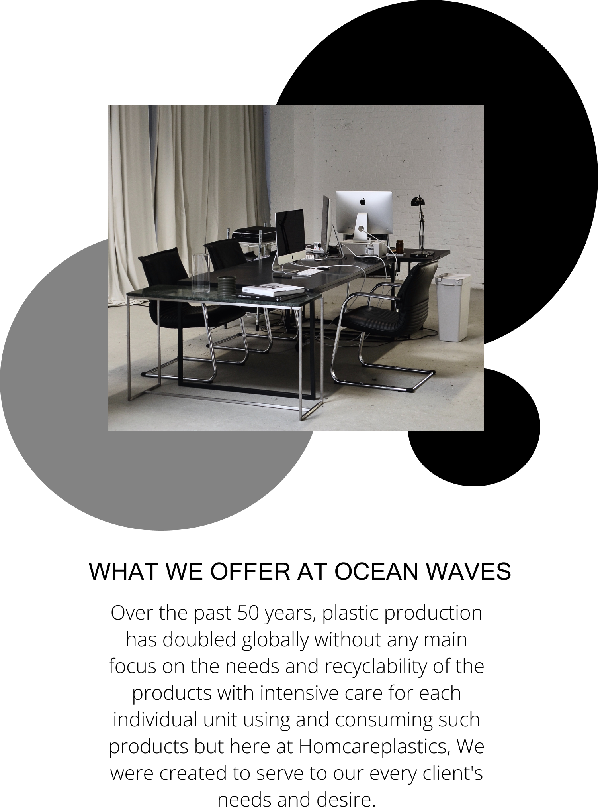
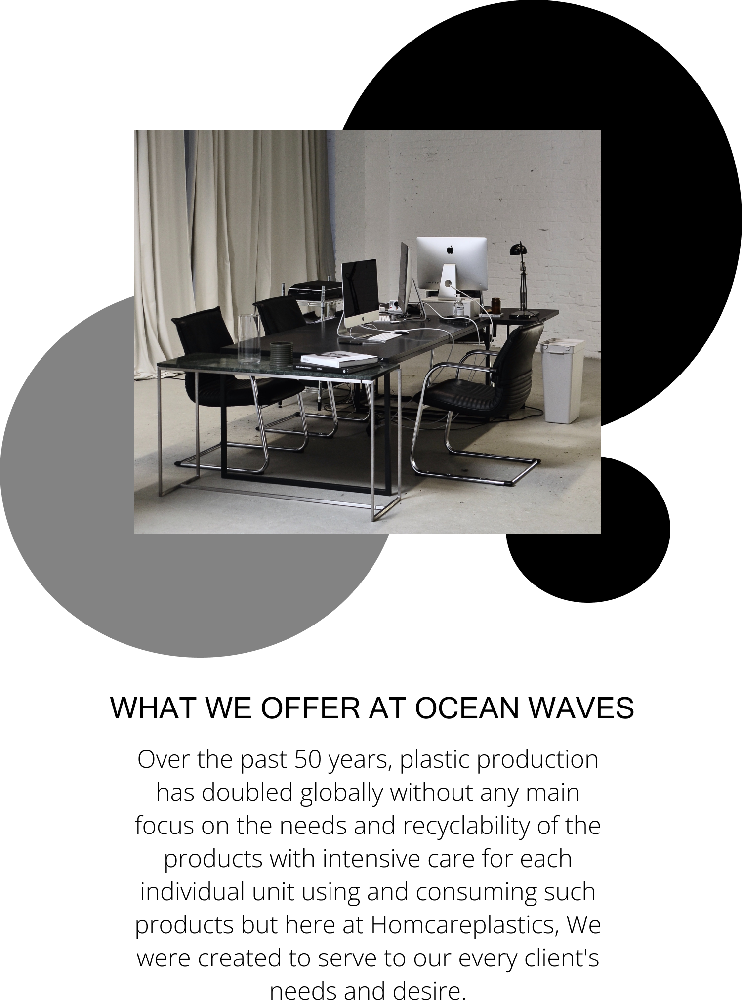
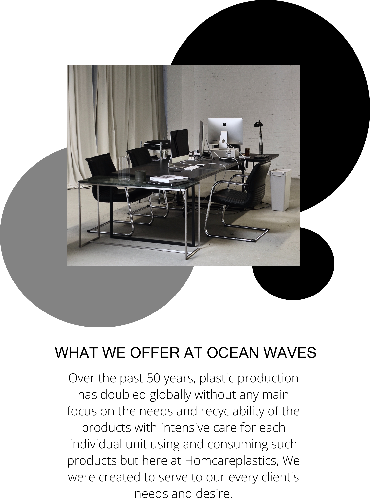
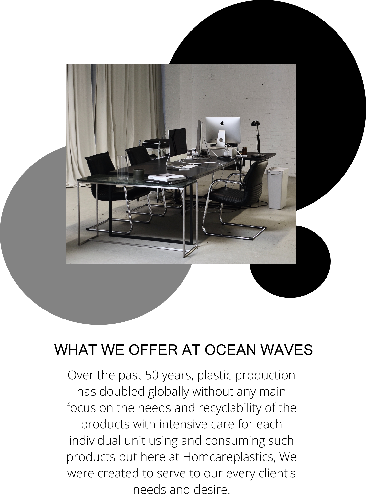

Here at OceanWaves there is no perspective reason to be loquacious as actions speak better than words, we purvey services with great yield to our clients, we are a team here under the brand of homcareplastics and we encourage perseverance, innovation, hardwork, as we believe each individual action affects us as a whole. Such is the butterfly effect, so we ensure that we do everything possible to make our products work.
More than 40 percent of plastic products are used once before they are disposed of, but our innovation personnels has dedicated its resources to the reduction of these numbers through and by our products, they are designed to be recyclable and even though we can't curb the actions of individuals we make sure our products are not perishable and easily breakable, with highly increased durability for further usage, we provide high quality speakers that can be use for testing different .
More than 40 percent of plastic products are used once before they are disposed of, but our innovation personnels has dedicated its resources to the reduction of these numbers through & by our products, they are designed to be recyclable and even though we can't curb the actions of individuals we make sure our products are not perishable and easily breakable, with highly increased durability for further usage.
How durable are our products? Our products are created with purpose and care, with flummoxing and lasting durability for individual and family purposes, the imperishability of our products are second to none and it's momentousness is substatiated to be the world's most used resource, we are a family whose duty is to provide our best for each individual member, these qualities provide a working relationship with our customers because their demands and wants are our main priority.
OceanWaves manufacturing coy presents oceanic speakers a branch of our splendid family specifically designed to cater to producing sound systems for our music and sound enthusiastic customers, with high quality speakers, tweeters and horns, and our products will be displayed on the next page, via the navbar or through the button below, our speakers are soothing, loud and of sound quality


Plastic is seen as a neccessity in the global horizon and this trending variable needs to be distributed with equal standing, this is where homcare plastic comes in, a developing brand of OceanWaves was created for the function of achieving this goal through high end technological equipments to make the production of its products to be more effective and efficient, as well as the research team to further the conservative and durable qualities of our products in relation to price
We are not a negligent corporation and we listen to any situation or complaints and if there is any disquietude concerns about our products visit the contact us page which can be found on the menu bar, to keep in touch with our wonderful team
Plastic is the world's most diverse world advanced creating material which is used in major sectors in every corner off the world, plastic has a high amount of energy, and lower cost of energy for it's generation.
Our products are used every single day, the verstility of plastic has taken the position of other advanced creating materials such as wood and metals especially in household settings
Plastic still remains one of the a kind as a valuable resource especially in this generation, this valuable resource's longetivity is its most intriguing feature as every plastic produced is still in existence.
Plastic products are the best suited products/material across any applications to reduce emissions outputs, reduce the use of water and energy and efficiently use valuable resources
Not only do our products provide these benefits but these products are highly versatile and recyclable in the sense they can be reused indefinitely in most cases.
Recycling of household plastic products creates a room in which the products can be used consecutively which in turn helps the global state of the world and reduces plastic pollution